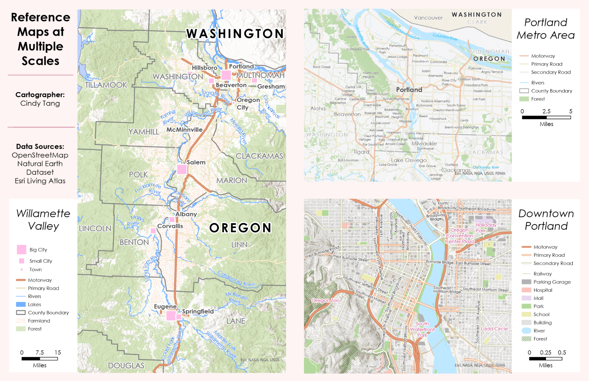

GIS · CARTOGRAPHY · MAP DESIGN
Custom Reference Maps.
Three reference maps show the Willamette Valley, Portland metro area, and downtown Portland at regional, metro, and city scales. Created in ArcGIS Pro without basemaps, the layouts use a cohesive visual hierarchy to make each map clear and easy to read.

approach
I built three basemap-free maps in ArcGIS Pro, moving from a regional view of the Willamette Valley to Portland's metro area and downtown.
design focus
I coordinated the visual hierarchy across all three scales and refined labels, symbols, and legends to improve readability while keeping the layouts cohesive.
tools
ArcGIS Pro · Cartographic layout · Symbology · Labels and legends